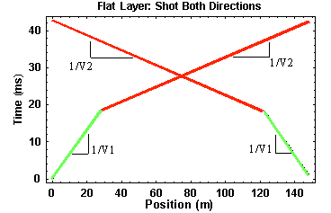

Recognizing Dipping Layers: A Field Procedure
On the previous two pages we've seen that the travel-time curves collected over dipping layers have the same shape as those collected over horizontal layers. Given this, is it possible to tell from the travel-time observations alone whether the layers are dipping or not?
Well, to make a long story short, the answer is yes. Although the form of the curves is the same, notice that the slope of the travel-time curve defined by the refracted arrival and the intercept time of the refracted arrival differs depending on whether you are shooting up dip or down dip.
Imagine we were to acquire refraction seismic observations over a flat, horizontal boundary as shown in the figure below.
We set out a line of geophones spaced at some interval from right to left as shown by the black arrows. We then placed our source to the left of the line of geophones and acquired travel-time observations. Next, we moved our source an equal distance to the right of the line of geophones and re-acquired the observations. In comparing the two sets of data, what would you expect them to look like?
In this case, since the layer is horizontal and the distances between the two sources are the same, just reversed, I would expect the travel times acquired from each source to be identical when plotted versus source/receiver offset but reversed when plotted versus receiver location. A plot of the latter is shown below.
In this particular example, the first source was at a position of 0 meters, and the second source was at a position of 150 meters. Because the geometry of the layer is the same under all of the sources and all of the receivers, no matter what positions the sources and receivers are in, as long as the offsets are constant, the travel-time curves have the exact same shape.
Now imagine doing the same experiment over a dipping layer as shown below.
The travel-time curves derived in this case are shown below. Recall that when shooting down dip, the travel-time curve defining the head wave off of the boundary has a slope greater than 1/V2 and a zero offset time from which you would compute a depth to the boundary greater than the depth to the boundary underneath the source. When shooting up dip, the travel-time curve defining the head wave off of the boundary has a slope of less than 1/V2 and a zero offset time from which you would compute a depth to the boundary less than the depth of the boundary underneath the source.
Thus, by acquiring refraction seismic observations in two directions, we can immediately determine whether or not subsurface layers are dipping. If dipping layers are present, the travel-time curves obtained in the two directions are no longer mirror images of each other.
Seismology
- Simple Earth Model: Low-Velocity Layer Over a Halfspacepg 11
- Head Wavespg 12
- Records of Ground Motionpg 13
- Travel-time Curves for a Simple Earth Modelpg 14
- First Arrivalspg 15
- Determining Earth Structure from Travel Timespg 16
- Derivation of Travel Time Equationspg 17
- High-Velocity Layer Over a Halfspace: Reprisepg 18
- Picking Times of Arrivalspg 25
- Wave Propagation with Multiple Horizontal Layerspg 26
- Travel Time Curves from Multiple Horizontalpg 27
- Hidden Layerspg 28
- Head Waves from a Dipping Layer: Shooting Down Dippg 29
- Head Waves from a Dipping Layer: Shooting Up Dippg 30
- A Field Procedure for Recognizing Dipping Bedspg 31
- Estimating Dips and Depths from Travelpg 32